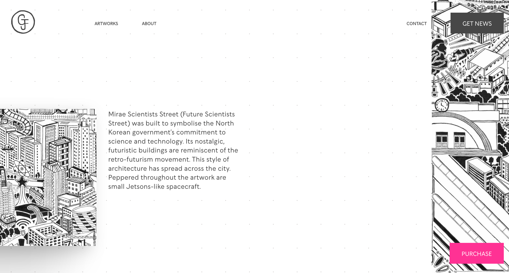

DART 349: INTRODUCTION TO WEB DESIGN
Website 1
Website 2
Website 3 *
Website 3:
garethfuller.com
“An insight into the mind and works of Gareth Fuller — an artist and explorer.”
design:
A nice thematic and fitting styling to the environment of the website. Has a dynamic feeling thanks
to the positioning and the visual shape of the content and animations/effects. (blurring, zooming)
usability:
Easy navigation with straightforward destinations. However a lot of scrolling when considering
finding smaller information or looking through the selection of works.
content:
The information presented is formal and quite lengthy. The individual showcases for the
artwork is very informative and interesting.
creativity:
The horizontal scrolling, story-like navigation for exploring the artworks is very intuitive and engaging.
